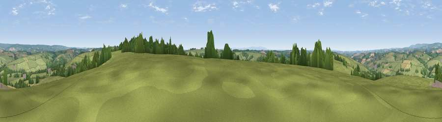

Viewpoint near Rose Ash
#14361 in England · top 21% of its area beats it · near Rose AshWhere it is
The exact computed spot (SS 78525 21925). Click the marker for map links.
The view, rendered

A 360° render of this exact spot computed from the terrain model, tree cover and land cover — summer colours, afternoon light, calibrated against photographs of famous viewpoints. Real trees, hedges and buildings will differ in detail.
The panorama
Grey silhouette: terrain skyline in each direction (720 bearings, Earth curvature and refraction included). Dashed green: skyline with trees (+15 m) and buildings (+8 m) as obstacles. Blue strip: how far the ground is visible on each bearing.
Where the view opens
Wedge length = distance to the farthest visible ground on that bearing (vegetation-aware). Rings at 10, 25 and 50 km.
What fills the view
81% grassland · 11% woodland · 7% cropland ·
Angular shares of the visible panorama (visual magnitude), not map area. Landscape diversity 0.28 (0–1 Shannon).
Key numbers
More beautiful places nearby
The staircase of upgrades: each row has a higher view potential than everything closer. Driving times are estimates from straight-line distance, calibrated against real road routing — check an actual route before setting out.
| Place | Direction | Drive | Score |
|---|---|---|---|
| Mornacott Hill | NNW · 6 km | ~13 min | 59.7 |
| Sindercombe Hill | N · 6 km | ~13 min | 61.3 |
| Viewpoint near Romansleigh | W · 7 km | ~14 min | 61.8 |
| Viewpoint near West Anstey | NE · 8 km | ~16 min | 62.2 |
| Viewpoint near North Molton | NW · 8 km | ~17 min | 63.1 |
| Viewpoint near North Molton | NW · 8 km | ~17 min | 64.0 |
| Viewpoint near Twitchen | NNE · 8 km | ~17 min | 66.0 |
| Stoodleigh Beacon | ESE · 10 km | ~20 min | 66.7 |
50.98388, -3.73194 · source: screening · position refined by local search. Computed location — check access rights before visiting.